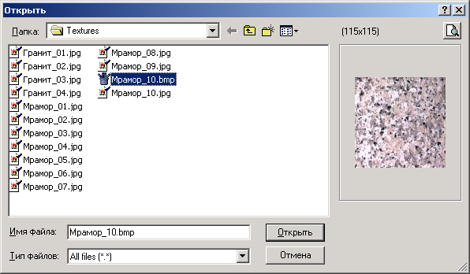

Кроме того, можно наложить текстуру, например, "под гранит".
Чтобы изменить цвет плиток, нужно сначала отметить их, а потом изменить им цвет.
Нажмите кнопку Отметить плитку

Если во время выделения удерживать Shift, то будут выделяться плитки, попавшие под курсор мышки. То есть, если нажат Shift, то для выделения плиток не нужно даже нажимать левую кнопку мышки, можно просто перемещать мышку над плитками.
После того, как плитки выделены, нажмите правой кнопкой мышки на чертеже и из появившегося меню выберите пункт Изменить цвет. Появится диалог, в котором нужно выбрать необходимый цвет.
|
Примечание. В разделе "Дополнительные цвета" первый цвет - это цвет плитки по умолчанию. То есть, если надо сделать плитку "нецветной", то нужно назначить ей именно этот цвет.
|
В том же меню можно сбросить выделение плиток. Вместо выпадающего меню можно воспользоваться кнопками на панели инструментов
Еще несколько возможностей нанести цвет на узор.
1. Простейший случай - равномерно разместить на участке одиночные цветные плитки .Отметить на участке несколько плиток. Нажать кнопку "Размножить выделение"
Отметьте на участке три плитки, как на рисунке ниже, причем первой отметьте левую нижнюю плитку.

Теперь нажмите
Теперь можно воспользоваться кнопкой Изменить цвет

При необходимости повторим процедуру:
2. Более сложный случай - равномерное распределение по участку геометрического узора. То же самое, что и в предыдущем случае, но перед размножением надо отметить группу плиток. Нужно как и в первом случае отметить на участке несколько плиток, составляющих геометрический узор. Например:
После этого нажать кнопку . Выделенные плитки сменят контур и зеленоватого на красноватый, и только первая из выделенных останется зеленоватой.
Теперь надо отметить плитки, которые, как и выделенная зеленым, будут первыми в геометрических узорах на своих местах:
После этого надо нажать кнопку Размножить выделение

И теперь уже можно изменить цвет. И потом не забыть сбросить веделение.
То же самое в более сложном варианте:
3. Выделить область с плитками.
Это делается при нажатой кнопке Отметить плитку
При этом плитки, хотя бы частично попавшие в область, будут выделены. Выделения областей и отдельные плиток можно повторять:
Чтобы в выделение попали только плитки, попавшие в область целиком, надо при обведении области удерживать Shift.
Более редкий случай оформления - текстура. Она делается проще. Чтобы наложить текстуру, надо нажать кнопку Назначить текстуру

Теперь плитки будут нарисованы поверх сплошной заливки "под мрамор".
Удалить текстуру можно кнопкой Удалить текстуру . Чтобы наложить на участок другую текстуру, можно не удалять старую, а сразу назначить новую. Старая удалится автоматически.
Проект можно считать законченным. Можно посмотреть в отчете, сколько плиток предположительно будет израсходовано. Можно ввести комментарий и потом распечатаеть проект вместе с отчетом и комментарием. И в конце работы можно сохранить проект для последующей обработки.